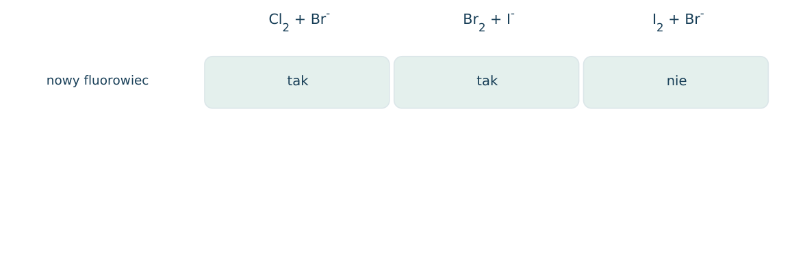
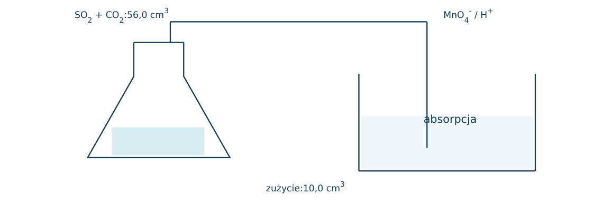
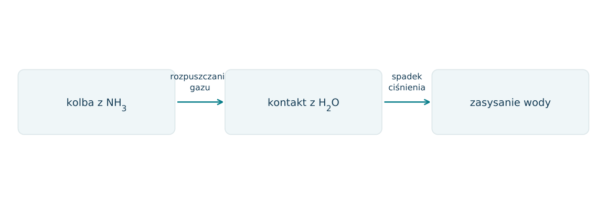
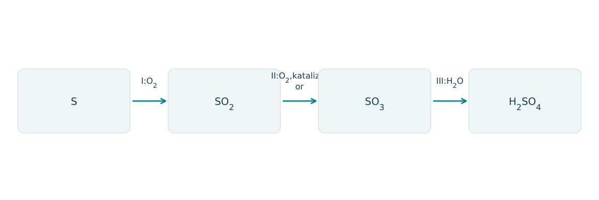
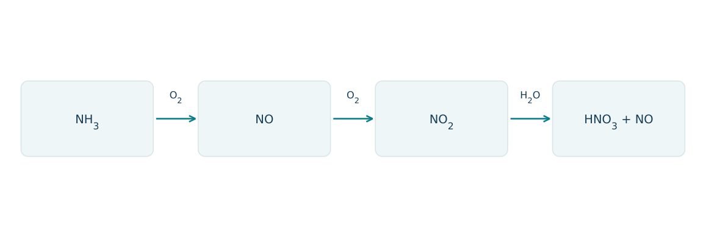
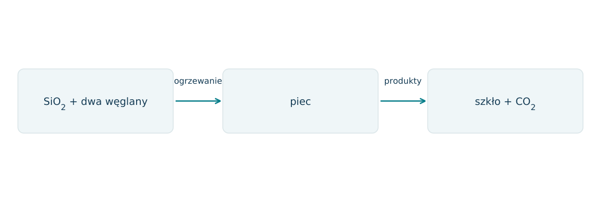
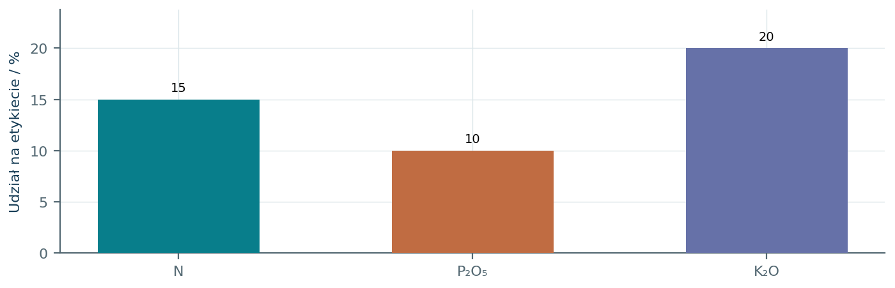
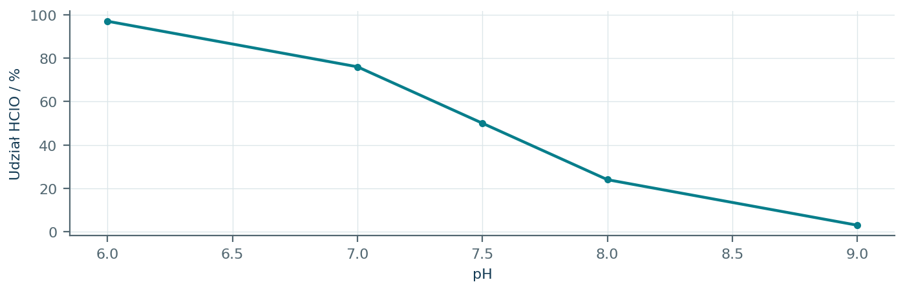
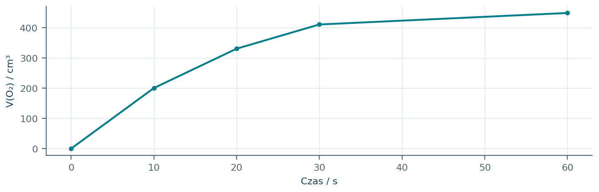
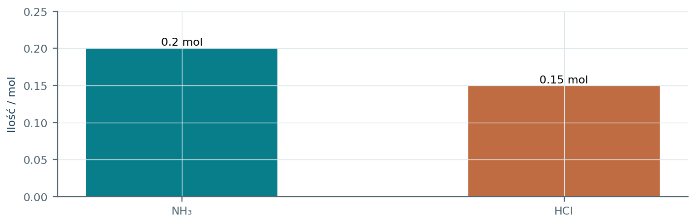

13.01 · 1 pkt
Uszereguj Cl2, Br2 i I2 według rosnącej mocy utleniającej.
Rozwiązanie
- I2 < Br2 < Cl2.
50 zadań · 107 pkt · odpowiedzi rozwijane po samodzielnej próbie
← KatalogZadania PDFRozwiązania PDFDane do obliczeń: H 1; C 12; N 14; O 16; Na 23; Mg 24; Al 27; P 31; S 32; Cl 35,5; K 39; Ca 40; Cr 52; Mn 55; Fe 56; Cu 64; Zn 65; Ag 108; Br 80; I 127; Ba 137 (g/mol). NA = 6,02·1023 mol-1. Vm = 22,4 dm3/mol w warunkach normalnych (0°C, 1013 hPa). W 25°C Kw = 10-14. Dane podane w zadaniu mają pierwszeństwo.
Uszereguj Cl2, Br2 i I2 według rosnącej mocy utleniającej.
Oceń zdania A, B i C, wpisując P albo F. Każde zdanie fałszywe popraw lub krótko uzasadnij. A: Cl2 utlenia Br- do Br2 w typowej próbie wodnej. B: I2 jest silniejszym utleniaczem niż Cl2. C: W temperaturze pokojowej Cl2 jest gazem, Br2 cieczą, a I2 ciałem stałym.
Dlaczego N2 ma małą reaktywność w temperaturze pokojowej?
Wyjaśnij zasadowy odczyn wodnego roztworu NH3.
Napisz równanie reakcji: wytwarzanie O2 przez rozkład H2O2 z katalizatorem. Podaj obserwację.
Napisz równanie reakcji: otrzymywanie Cl2 z MnO2 i HCl po ogrzaniu. Podaj obserwację.
Napisz równanie reakcji: Cl2 z roztworem KBr. Podaj obserwację.
Napisz równanie reakcji: Br2 z roztworem KI. Podaj obserwację.
Napisz równanie reakcji: wodór z chlorem pod wpływem światła. Podaj obserwację.
Napisz równanie reakcji: spalanie wodoru w tlenie. Podaj obserwację.
Napisz równanie reakcji: siarka z żelazem po zainicjowaniu ogrzewaniem. Podaj obserwację.
Napisz równanie reakcji: spalanie siarki w tlenie do SO2. Podaj obserwację.
Napisz równanie reakcji: SO2 z NaOH przy pełnym zobojętnieniu. Podaj obserwację.
Napisz równanie reakcji: Cu z gorącym stężonym H2SO4. Podaj obserwację.
Napisz równanie reakcji: NO z tlenem. Podaj obserwację.
Napisz równanie reakcji: NH4Cl z Ca(OH)2 po ogrzaniu. Podaj obserwację.
Napisz równanie syntezy amoniaku i podaj rolę żelaza w procesie.
Czy I2 utleni Br- w wodnym roztworze, jeśli E°(Br2/Br-)>E°(I2/I-)? Uzasadnij.
Napisz równanie reakcji chloru z wodą do HCl i HClO.
Jak odróżnić gazy O2 i CO2? Podaj test i wyniki.
Dlaczego NH3 można identyfikować wilgotnym czerwonym lakmusem, lecz nie zaleca się bezpośredniego wąchania gazu?
Dlaczego CO i CO2 mają różny charakter chemiczny tlenków?
Napisz równanie redukcji CuO wodorem.
Napisz równanie reakcji SiO2 z NaOH podczas stapiania.
Podaj charakter chemiczny SiO2 i wyjaśnij go na podstawie reakcji z zasadą.
Czy kwarc i szkło są identyczne pod względem uporządkowania struktury? Wyjaśnij.
Informacja: szkło sodowo-wapniowe otrzymuje się z SiO2, Na2CO3 i CaCO3. Wskaż składnik sieciotwórczy i źródło gazowych produktów procesu.
Jaką właściwość SiO2 wykorzystuje się w wyrobie materiałów odpornych na wysoką temperaturę?
Który nawóz dostarcza jednocześnie N i P: KCl, NH4H2PO4 czy CaCO3?
Oblicz procent masowy azotu w (NH4)2SO4.
Ile gramów N zawiera 250 g nawozu o 20,0% masowych N?
Nawóz zawiera 30% masowych K2O w umownym przeliczeniu. Ile gramów K odpowiada 100 g nawozu? M(K2O)=94 g/mol.
Oblicz V(O2) w warunkach normalnych z rozkładu 6,8 g H2O2.
Ile gramów Cl2 potrzeba do utlenienia 0,10 mola Br-?
Do KBr dodano chlor, a następnie heksan. Warstwa organiczna barwi się pomarańczowo. Wyjaśnij reakcję i rolę ekstrakcji.
Tlen otrzymano z 0,10 mola KMnO4 według 2KMnO4 → K2MnO4 + MnO2 + O2. Oblicz ilość O2 i wskaż stałe produkty.
Podano, że SO2 redukuje wodę bromową do Br- i utlenia się do SO42-. Zapisz jonowe równanie w środowisku kwasowym.
Dwa bezbarwne gazy to NH3 i HCl. Zaproponuj identyfikację wskaźnikiem i opisz różnicę.
Dlaczego nadmierny dopływ nawozów azotowych i fosforowych do jeziora może prowadzić do niedoboru tlenu?
W próbie A siarczan(IV) odbarwia zakwaszony MnO4-, w próbie B siarczan(VI) nie daje tej reakcji. Wyjaśnij różnicę stopniem utlenienia S.
Każdy numer 41-50 oznacza jedno zadanie główne; podpunkty są oceniane osobno.
W trzech próbach do roztworów halogenków dodano inny wolny fluorowiec. Zestawienie obrazuje, czy wykryto nowy fluorowiec. Warunki były wodne, bez zewnętrznego źródła prądu i bez innych utleniaczy.

13.41.1 (2 pkt) Zapisz dwa zachodzące równania jonowe i uporządkuj moc utleniającą fluorowców.
13.41.2 (1 pkt) Ile moli Cl2 trzeba do utlenienia 0,0400 mola I-?
13.41.3 (1 pkt) Dlaczego brak reakcji trzeciej próby jest zgodny z kierunkiem pierwszych dwóch?
Cl2+2Br-→2Cl-+Br2; Br2+2I-→2Br-+I 2; I 2<Br2<Cl2.
0,0200 mola, bo jeden Cl2 przyjmuje dwa elektrony.
I 2 jest słabszym utleniaczem niż Br2 i nie wypiera go z bromków w tych warunkach.
56,0 cm3 mieszaniny SO2 i CO2 w warunkach normalnych przepuszczono przez nadmiar zakwaszonego MnO4-. Zużyto 10,0 cm3 KMnO4 0,0200 mol/dm3. Tylko SO2 ulega utlenieniu do SO42-, a MnO4- redukuje się do Mn2+.

13.42.1 (2 pkt) Zbilansuj równanie reakcji SO2 z MnO4- w kwasie.
13.42.2 (2 pkt) Oblicz objętościowy udział SO2.
13.42.3 (1 pkt) Czy pochłonięcie obu gazów w NaOH bez dodatkowych pomiarów pozwoliłoby je rozróżnić?
2MnO4-+5SO2+2H2O→2Mn2++5SO42-+4H+.
nMnO4=0,000200 mol, nSO2=0,000500; ntotal=0,00250 mol; SO2=20,0%.
Nie; oba kwaśne tlenki reagują z zasadą, więc sama absorpcja nie określa ich tożsamości ani udziałów.
Kolba zawiera 224 cm3 NH3 przeliczone na warunki normalne. Po kontakcie z wodą gaz rozpuszcza się i woda zostaje zassana do wnętrza. Cały NH3 trafił ostatecznie do 100 cm3 roztworu. Kb=10-5; pomiń straty i zmianę objętości.

13.43.1 (2 pkt) Wyjaśnij przyczynę zasysania oraz podaj odczyn roztworu z równaniem.
13.43.2 (1 pkt) Oblicz c analityczne NH3 po rozpuszczeniu.
13.43.3 (1 pkt) Oszacuj pH w 25°C, używając [OH-]≈√(Kb c).
Rozpuszczanie usuwa gaz z kolby i obniża ciśnienie; NH3+H2O⇌NH4++OH-, odczyn zasadowy.
n=0,224/22,4=0,0100 mol; c=0,100 mol/dm3.
[OH-]=10-3 mol/dm3; pOH=3, pH=11.
W ciągu technologicznym S→SO2→SO3→H2SO4 użyto 3,20 g S. Załóż brak zanieczyszczeń, a wydajność całkowitą przyjmij 90,0%. Katalizator w etapie II zmienia szybkość dojścia do równowagi.

13.44.1 (2 pkt) Zapisz trzy równania i stopnie utlenienia S w produktach kolejnych etapów.
13.44.2 (1 pkt) Oblicz rzeczywistą masę czystego H2SO4.
13.44.3 (1 pkt) Czy sam katalizator zwiększa równowagowy udział SO3 w ustalonej temperaturze?
S+O 2→SO2;2SO2+O 2⇌2SO3; SO3+H2O→H2SO4; stopnie+IV,+VI,+VI.
nS=0,100 mol; mkwasu=0,90·0,100·98=8,82 g.
Nie; przyspiesza oba kierunki i nie zmienia K ani składu równowagowego w danej T.
W pierwszych dwóch etapach NH3 utlenia się do NO, a NO do NO2. W etapie absorpcji bez dopływu dodatkowego O 2 NO2 z wodą tworzy HNO3 i ponownie NO. Podano, że na 3 mole NO2 powstają 2 mole HNO3 i 1 mol NO.

13.45.1 (2 pkt) Zapisz równania dwóch etapów od NO do produktów absorpcji.
13.45.2 (1 pkt) Oblicz produkty absorpcji 0,150 mola NO2.
13.45.3 (1 pkt) Wyjaśnij, dlaczego ostatnia reakcja jest dysproporcjonowaniem N.
2NO+O 2→2NO2;3NO2+H2O→2HNO3+NO.
0,100 mola HNO3 i 0,0500 mola NO.
N w NO2 ma+IV; część przechodzi w+V w HNO3, część w+II w NO.
Model szkła zapisano umownie jako Na 2O·CaO·6SiO2. To model obliczeniowy, nie twierdzenie o identycznym składzie każdego szkła. Do pieca trafia po 0,100 mola Na 2CO3 i CaCO3 oraz 0,600 mola SiO2; ulatnia się wyłącznie CO2.

13.46.1 (2 pkt) Zapisz równanie w przyjętym modelu.
13.46.2 (1 pkt) Oblicz masę produktu stałego i masę gazu; M składnika szkła=478 g/mol.
13.46.3 (1 pkt) Wyjaśnij różnicę uporządkowania struktury szkła i kwarcu.
6SiO2+Na 2CO3+CaCO3→Na 2O·CaO·6SiO2+2CO2.
Szkło 0,100·478=47,8 g; CO2: 0,200·44=8,80 g.
Szkło jest amorficzne, kwarc krystaliczny; oba mogą zawierać sieć opartą na Si i O, lecz o innym uporządkowaniu dalekiego zasięgu.
Etykieta nawozu podaje 15% N,10% P2O5 i 20% K2O. Fosfor i potas są wyrażone umownie w przeliczeniu na tlenki; nie musi to oznaczać obecności tych tlenków w nawozie. Rozważ 100 kg produktu.

13.47.1 (2 pkt) Oblicz masę pierwiastkowego P i K. M(P2O5)=142, M(K2O)=94 g/mol.
13.47.2 (1 pkt) Podaj masę N i wyjaśnij, dlaczego nie stosuje się tu przelicznika tlenkowego.
13.47.3 (1 pkt) Powiąż nadmierny dopływ składników N i P do jeziora z możliwym niedoborem tlenu.
P: 10·62/142≈4,37 kg; K: 20·78/94≈16,6 kg.
15,0 kg N; etykieta podaje N bezpośrednio jako udział pierwiastka.
Nadmiar biogenów nasila wzrost biomasy; jej późniejszy rozkład zużywa tlen rozpuszczony w wodzie.
W modelowym roztworze HClO/ClO- pKa=7,50. Udział formy HClO przedstawiono na wykresie. Podano [ClO-]/[HClO]=10^(pH-pKa). Zadanie dotyczy równowagi chemicznej, nie doboru warunków użytkowania środka dezynfekcyjnego.

13.48.1 (2 pkt) Oblicz stosunek form przy pH=8,50 i procent formy HClO.
13.48.2 (1 pkt) Zapisz dysocjację HClO w wodzie i wskaż sprzężoną zasadę.
13.48.3 (1 pkt) Porównaj stopnie utlenienia Cl w HClO, ClO- i Cl-.
ClO-/HClO=10; udziałHClO=1/11≈9,09%.
HClO+H2O⇌ClO-+H3O+; zasadaClO-.
HClO iClO-: +I; Cl-: -I; dysocjacja nie jest redoksem, przejście doCl- jest redukcją.
20,0 g roztworu H2O2 rozłożono w obecności 0,50 g MnO2. Po reakcji odzyskano podobną masę MnO2. Wykres objętości suchego O 2 osiągnął 448 cm3 w warunkach normalnych. Załóż całkowity rozkład H2O2.

13.49.1 (2 pkt) Napisz równanie i oblicz cp H2O2 w próbce.
13.49.2 (1 pkt) Jaką rolę może pełnić MnO2 i jaki dodatkowy eksperyment powinien to potwierdzić?
13.49.3 (1 pkt) Dlaczego odzyskanie podobnej masy MnO2 samo w sobie nie jest pełnym dowodem katalizy?
2H2O2→2H2O+O 2; nO2=0,0200, nH2O2=0,0400, m=1,36 g; cp=6,80%.
Katalizator; porównać szybkość z identyczną próbą bez MnO2.
Masa nie dowodzi przyspieszenia; może też zawierać wilgoć lub domieszki, dlatego potrzebna kontrola szybkości.
W zamkniętym układzie zmieszano 0,200 mola NH3 i 0,150 mola HCl. Powstaje stały NH4Cl; pomiń jego parowanie i dysocjację termiczną. Rysunek pokazuje ilości początkowe, nie stan końcowy.

13.50.1 (2 pkt) Napisz równanie i wskaż substrat ograniczający.
13.50.2 (1 pkt) Oblicz masę soli i ilość pozostałego gazu.
13.50.3 (1 pkt) Opisz proces jako przeniesienie protonu. Czy jest redoksem?
NH3+HCl→NH4Cl; ograniczaHCl.
nNH4Cl=0,150 mol, m=8,025 g; pozostaje 0,0500 mola NH3.
NH3 przyjmuje proton od HCl, tworząc NH4+; nie zmieniają się stopnie utlenienia, więc nie jest redoksem.